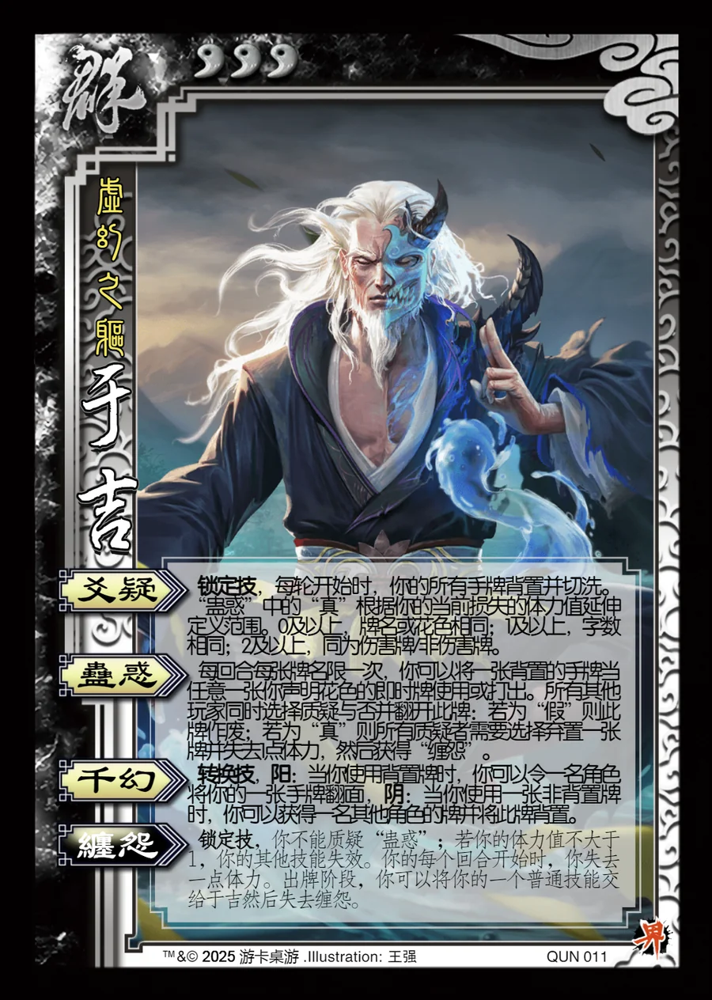

点击卡面查看大图
群
界于吉
♥3虚幻之躯
爻疑锁定技
锁定技，每轮开始时，你的所有手牌背置并切洗。“蛊惑”中的“真”根据你的当前损失的体力值延伸定义范围。0及以上，牌名或花色相同；1及以上，字数相同；2及以上，同为伤害牌/非伤害牌。
蛊惑
每回合每张牌名限一次，你可以将一张背置的手牌当任意一张你声明花色的即时牌使用或打出。所有其他玩家同时选择质疑与否并翻开此牌：若为“假”则此牌作废；若为“真”则所有质疑者需要选择弃置一张牌并失去1点体力，然后获得“缠怨”。
千幻转换技
转换技，阳：当你使用背置牌时，你可以令一名角色将你的一张手牌翻面，阴：当你使用一张非背置牌时，你可以获得一名其他角色的牌并将此牌背置。
缠怨锁定技衍生
锁定技，你不能质疑“蛊惑”；若你的体力值不大于1，你的其他技能失效。你的每个回合开始时，你失去一点体力。出牌阶段，你可以将你的一个普通技能交给于吉然后失去缠怨。